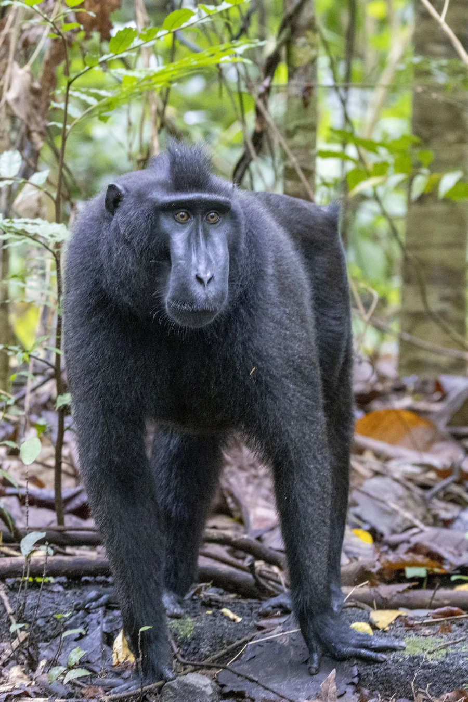

哺乳动物 · 动物界
黑冠猕猴 Macaca nigra

印度尼西亚苏拉威西岛特有的黑色猕猴，头顶有尖立的冠毛、臀部呈粉红色，成群活动，因狩猎和栖息地丧失而极危。
- 分类
- 门脊索动物门纲哺乳纲目灵长目科猴科属猕猴属
- 栖息环境
- 苏拉威西岛北部的热带雨林、次生林与红树林
- 地理分布
- 印度尼西亚苏拉威西岛北部及附近小岛，为当地特有种
- 保护级别
- IUCN 极危（CR）；CITES 附录Ⅱ
物种志
黑冠猕猴体长 0.45–0.6 米，体重 5–10 kg，尾极短。它全身覆黑色短毛，头顶的毛向上竖起形成尖冠，因此得名；面部裸露呈黑色，臀部皮肤为醒目的粉红色。雄性的犬齿较大，面部表情丰富，常通过咧嘴展示牙齿进行交流。
黑冠猕猴是印度尼西亚苏拉威西岛北部的特有种，栖息于热带雨林、次生林和红树林。它以果实、树叶、花芽和昆虫为食，结成 5–25 只的群体，由成年雄性担任首领，群体成员通过理毛和面部表情维持关系。黑冠猕猴每天在树冠和林下层活动，夜间在树上休息，活动范围较大。雌性妊娠期约 170 天，每胎 1 仔。由于当地人将其视为食物而大量捕猎，加上森林砍伐，黑冠猕猴种群急剧下降，被列为极危，是世界上最濒危的灵长类之一。
形态与习性
- 食性果实、树叶、花芽与昆虫
- 体长0.45–0.6 m，尾极短
- 体重5–10 kg
- 寿命约 20 年
- 繁殖妊娠期约 170 天，每胎 1 仔
- 社会结构5–25 只群体，由成年雄性担任首领
- 外形全身黑色，头顶冠毛尖立，臀部粉红色
趣味知识
- 黑冠猕猴头顶的黑色毛尖尖竖起，像戴着一顶小冠帽。
- 它的臀部皮肤呈粉红色，与全身的黑毛形成鲜明对比。
- 当地人大量猎捕黑冠猕猴作为食物，使其成为最濒危的灵长类之一。
- 黑冠猕猴通过咧嘴露齿等面部表情进行交流。